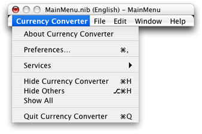
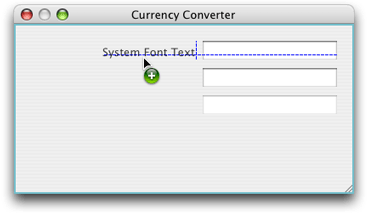
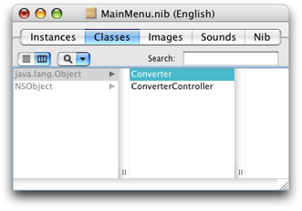
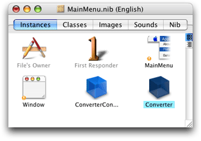

Legacy Document
Important: The Java API for Cocoa is deprecated in Mac OS X version 10.4 and later. You should use the Objective-C API instead. For a tutorial on using Cocoa with Objective-C, see Cocoa Application Tutorial.
Creating the Currency Converter Project and User Interface
This chapter guides you through the development of the user interface of the Currency Converter application and in the process teaches you the essential steps required for building a Cocoa application.
In this section:
Creating the Currency Converter Project
Creating the Currency Converter User Interface
Defining the ConverterController Class
Interconnecting the ConverterController Class and the User Interface
Defining the Converter Class
Creating the Currency Converter Project
Every Cocoa application starts life as a project. A project is a repository for all the elements that go into the application, such as source code files, frameworks, libraries, the application’s user interface, sounds, and images. You use the Xcode application to create and manage your project.
The following sections cover the steps necessary to create the Currency Converter project.
Open Xcode
To open Xcode:
In the Finder, go to
/Developer/Applications.Double-click the icon, shown in Figure 1-1.
The first time you start Xcode, it asks you a few setup questions. The default values should work for the majority of users.
Choose the New Project Command
When Xcode is launched, only its menu bar appears. To create a project, choose New Project from the File menu. The New Project Assistant appears.
Choose a Project Type
Xcode can build several types of applications, including everything from Carbon and Cocoa applications to Mac OS X kernel extensions and Mac OS X frameworks. For this tutorial, select Cocoa-Java Application and click Next, as shown in Figure 1-2.
Type
Currency Converterin the Project Name field, as shown in Figure 1-3.Click Choose to navigate to the directory where you want your project to be stored. The drop-down menu next to the Project Directory text field eventually fills up with your frequently used directories. Use this to save time in the future.
Click Finish.
When you click Finish, Xcode creates the project’s files and displays the project window, shown in Figure 1-4.
The Groups & Files list is comprised of all the source files, images, and other resources that make up a project. These files are grouped in the project group, the first item in the Groups & Files list; this group is named after the project. The project’s files are grouped into subgroups, such as Classes, Other Sources, Resources, and so on, as shown in Figure 1-4. These groups are very flexible in that they do not necessarily reflect either the on-disk layout of the project or the way the build system handles it. They are purely for organizing your project. The groups created by Xcode should be suitable for most developers, but you can rearrange them however you like.
These are the groups Xcode sets up for Cocoa-Java applications:
Classes. This group is empty at first. However, you can place in it the classes required by your application.
Other Sources. This group contains the
main.mfile, which implements themainroutine. This routine starts the application. (You shouldn’t have to modify this file.) This group also containsCurrency Converter_Prefix.h. This “prefix header” helps Xcode reduce the compilation time of C-based source files. This is not important for this tutorial.Resources. This group contains the nib files and other resources that specify the application’s user interface. What Is a Nib File? describes nib files.
Frameworks. This group contains the frameworks (which are similar to packages) that the application uses.
Products. This group contains the results of project builds and is automatically populated with references to the products created by each target in the project.
Below the project group are other groups, including smart groups. Smart groups—identified by the purple folders on the left side of the column—allow you to sort the project’s files using custom rules in a way similar to using smart playlists in iTunes.
These are some of the other groups in the Groups & Files list:
Targets. Lists all the end results of your builds. This group usually contains one target, such as an application or a framework, but it can consist of multiple items.
Executables. Contains all the the executable products your project creates.
Errors and Warnings. Displays the errors and warnings encountered in your project when you perform a build.
Curious folks might want to look in the project directory to see what kind of files it contains. Among the project files are:
English.lprojA directory containing resources localized to the English language. In this directory are nib files automatically created for the project. You may find other directories containing localized resources, such as
Dutch.lproj.
main.mAn Objective-C file, generated for each project, that contains the entry-point code for the application.
Currency Converter.xcodeprojThis file contains information that defines the project. It should not be modified directly. You can open your project by double-clicking this file in the Finder.
Creating the Currency Converter User Interface
This section guides you through the code-free steps involved in creating a functioning user interface for Currency Converter and explains interesting and important aspects of Cocoa programming along the way.
What Is a Nib File?
Every Cocoa application with a graphical user interface has at least one nib file. The main nib file is loaded automatically when an application launches. It contains the menu bar and generally at least one window along with various other objects. An application can have other nib files as well. Each nib file contains:
Archived objects. Also known in object-oriented terminology as “flattened” or “serialized” objects—meaning that the object has been encoded in such a way that it can be saved to disk (or transmitted over a network connection to another computer) and later restored to memory. Archived objects contain information such as their size, location, and position in the object hierarchy. At the top of the hierarchy of archived objects is the File’s Owner object, a proxy object that points to the actual object that owns the nib file (typically, the one that loaded the nib file from disk).
Images. Image files that you drag and drop on the nib file window or on an object that can accept them (such as a button or image view).
Class references. Interface Builder can store the details of Cocoa objects and objects that you place into static palettes, but it does not know how to archive instances of your custom classes since it doesn’t have access to the code. For these classes, Interface Builder stores a proxy object to which it attaches your custom class information.
Connection information. Information about how objects within the class hierarchies are interconnected. Connector objects special to Interface Builder store this information. When you save a document, its connector objects are archived in the nib file along with the objects they connect.
Open the Main Nib File
You use Interface Builder to define an application’s user interface. To open the Currency Converter’s main nib file in Interface Builder:
Locate
MainMenu.nibin the Resources subgroup of your project.Double-click the nib file. This opens the nib file in Interface Builder.
A default menu bar called MainMenu and a window titled “Window” appear when the nib file is opened.
Windows in Cocoa
A window in Cocoa looks very similar to windows in other user environments, such as Windows. It is a rectangular area on the screen in which an application displays things such as controls, fields, text, and graphics. Windows can be moved around the screen and stacked on top of each other like pieces of paper. A typical Cocoa window has a title bar, a content area, and several control objects.
NSWindow and the Window Server
Many user-interface objects other than the standard window are windows. Menus, pop-up lists, and pull-down lists are primarily windows, as are all varieties of utility windows and dialogs: attention dialogs, Info windows, drawers, panels, and tool palettes, to name a few. In fact, anything drawn on the screen must appear in a window. End users, however, may not recognize or refer to them as “windows.”
Two interacting systems create and manage Cocoa windows. A window is created by the Window Server. The Window Server is a process that uses the internal window management portion of Quartz (the low-level drawing system) to draw, resize, hide, and move windows using Quartz graphics routines. The Window Server also detects user events (such as mouse clicks) and forwards them to applications.
The window that the Window Server creates is paired with an object supplied by the Application Kit framework (AppKit). The object supplied is an instance of the NSWindow class. Each physical window in a Cocoa program is managed by an instance of NSWindow or a subclass of it. For information on AppKit, see The Cocoa Frameworks in Cocoa Fundamentals Guide.
When you create an NSWindow object, the Window Server creates the physical window that the NSWindow object manages. The NSWindow class offers a number of instance methods through which you customize the operation of its onscreen window.
Application, Window, View
In a running Cocoa application, NSWindow objects occupy a middle position between an instance of NSApplication and the views of the application. (A view is an object that can draw itself and detect user events.) The NSApplication object keeps a list of its windows and tracks the current status of each. Each NSWindow object manages a hierarchy of views in addition to its window.
At the top of this hierarchy is the content view, which fits just within the window’s content rectangle. The content view encloses all other views (its subviews) that come below it in the hierarchy. The NSWindow distributes events to views in the hierarchy and regulates coordinate transformations among them.
Another rectangle, the frame rectangle, defines the outer boundary of the window and includes the title bar and the window’s controls. Cocoa uses the bottom-left corner of the frame rectangle as the origin for the base coordinate system, unlike Carbon and Classic applications, which use the top-left corner. Views draw themselves in coordinate systems transformed from (and relative to) this base coordinate system.
Key and Main Windows
Windows have numerous characteristics. They can be onscreen or offscreen. Onscreen windows are “layered” on the screen in tiers managed by the Window Server. Onscreen windows can also have a status: key or main.
Key windows respond to key presses for an application and are the primary recipient of messages from menus and panels. Usually, a window is made key when the user clicks it. Each application can have only one key window.
An application has one main window, which can often have key status as well. The main window is the principal focus of user actions for an application. Often user actions in a modal key window (typically a panel such as the Font window or an Info window) have a direct effect on the main window.
Resize the Window
Make the window smaller by dragging the bottom-right corner of the window inward, as shown in Figure 1-5.
You can resize the window more precisely in the Size pane in the NSWindow inspector.
Choose Show Inspector from the Tools menu.
Choose Size from the inspector pop-up menu.
In the Content Rectangle group, choose Width/Height from the second pop-up menu.
Type
400in the width (“w”) field and200in the height (“h”) field, as shown in Figure 1-6.
Set the Window’s Title and Other Attributes
Set other attributes for the window in the NSWindow inspector:
Choose Attributes from the inspector pop-up menu and change the window’s title to “Currency Converter”. Press Return to lock in the change.
Verify that the “Visible at launch time” option is selected.
Deselect the Zoom option in the “Title bar controls” group.
Set the Application Name in the Menu
Interface Builder places the term “NewApplication” in place of the application name in the menu bar. You must change this text to the application name in all menu items that include the application name, such as the application menu and the Help menu.
In the MainMenu window, double-click NewApplication, and press the Space bar.
In the NSMenuItem inspector, enter
Currency Converterin the Title text field and press Return.In the MainMenu window, click Currency Converter, double-click Quit NewApplication, and type
Quit Currency Converter.Click Help and replace “New Application Help” with “Currency Converter Help”.
Configure a Text Field
The Interface Builder palette window contains several user-interface elements or controls that you can drag into a window or menu to create an application’s user interface. You open the Interface Builder palette window—shown in Figure 1-7—by choosing Tools > Palettes > Show Palettes.
Click the text toolbar item in the palette window (shown as the third toolbar item in Figure 1-7) and drag a text field object to the top-right corner of the Currency Converter window. Notice that Interface Builder helps you place objects according to the Apple human interface guidelines by displaying layout guides when an object is dragged close to the proper distance from neighboring objects or the edge of the window.
Increase the text field’s size so that it’s about 50% wider. Resize the text field by grabbing a handle and dragging in the direction you want it to grow. In this case, drag the left handle to the left to enlarge the text field, as shown in Figure 1-8.
Currency Converter needs two more text fields, both the same size as the first. There are two options: You can drag another text field from the palette to the window and make it the same size as the first one; or you can duplicate the text field already in the window.
Duplicate an Object
To duplicate the text field in the Currency Converter window:
Select the text field, if it is not already selected.
Choose Duplicate (Command-D) from the Edit menu. The new text field appears slightly offset from the original field.
Position the new text field under the first text field. Notice that the layout guides appear and Interface Builder snaps the text field into place.
To make the third text field, press Command-D. Notice that Interface Builder remembered the offset from the previous Duplicate command and automatically applied it to the newly created text field.
As a shortcut, you can also Option-drag the original text field to duplicate it.
Change the Attributes of a Text Field
The bottom text field displays the results of the currency-conversion computation and should therefore have different attributes than the other text fields: It must not be editable by the user.
Select the third text field.
In the NSTextField inspector, choose Attributes from the pop-up menu.
Deselect the Editable option so that users are not allowed to alter the contents of the text field. Make sure the Selectable option is selected so that users can copy and paste the contents of the text field to other applications.
Assign Labels to the Fields
Text fields without labels would be confusing, so add labels by using the ready-made label object from the Text palette.
Drag a System Font Text element onto the window from the Cocoa Text palette.
In the NSTextField inspector, enter
Exchange Rate per $1:in the Title text field.Make the text label right aligned. With the System Font Text element selected, click the third button from the left in the Alignment area in the inspector, as shown in Figure 1-9.
Duplicate the text label twice. Set the title of the second text label to “Dollars to Convert:” and the title for the third text label to “Amount in Other Currency:”.
Align the new text labels as shown in Figure 1-10. You may need to expand the text labels so that their entire titles are visible.
Configure a Button
The currency conversion should be invoked either by clicking a button or pressing Return.
Drag the Button element from the Cocoa Controls palette to the bottom-right corner of the window.
Double-click the button and change its title to “Convert”.
Choose Attributes from the NSButton inspector pop-up menu and then choose Return from the Key Equiv pop-up menu. This makes the button respond to the Return key as well as clicks.
Align the button under the text fields:
Drag the button downward until the layout guide appears and then release it.
With the button still selected, hold down the Option key. If you move the pointer around, Interface Builder shows you the distance from the button to the object over which the pointer is hovering.
With the Option key still down and the pointer over the Amount in Other Currency text field, use the arrow keys to nudge the button so that its center is aligned with the center of the text field, as shown in Figure 1-11.
Add a Horizontal Decorative Line
You probably noticed that the final interface for Currency Converter has a decorative line between the text fields and the button. To add the line to the Currency Converter window:
Drag a horizontal line element from the Cocoa Controls palette to the Currency Converter window.
Drag the endpoints of the line until the line extends across the window, as shown in Figure 1-12.
Move the Convert button up until the layout guide appears below the Amount in Other Currency text field, and shorten the window until the horizontal layout guide appears below the Convert button.
Interface Layout and Object Alignment
In order to make an attractive user interface, you must be able to visually align interface objects in rows and columns. “Eyeballing” the alignments can be very difficult; and typing in x/y coordinates by hand is tedious and time consuming. Aligning Aqua interface elements is made even more difficult because the elements have shadows and user interface guideline metrics do not typically take the shadows into account. Interface Builder uses visual guides and layout rectangles to help you with object alignment.
In Cocoa, all drawing is done within the bounds of an object’s frame. Because interface objects have shadows, they do not visually align correctly if you align the edges of the frames. For example, the Apple user interface guidelines say that a push button should be 20 pixels tall, but you actually need a frame of 32 pixels for both the button and its shadow. The layout rectangle is what you must align. You can view the layout rectangles of objects in Interface Builder using the Show Layout Rectangles command (Command-L) in the Layout menu.
Interface Builder gives you several ways to align objects in a window:
Dragging objects with the mouse in conjunction with the layout guides
Pressing arrow keys (with the grid off, the selected objects move one pixel)
Using a reference object to put selected objects in rows and columns
Using the built-in alignment functions
Specifying origin points in the Size pane in the inspector
The Alignment and Guides submenus in the Layout menu provide various alignment commands and tools, including the Alignment window, which contains controls you can use to perform common alignment operations.
Finalize the Window Layout
Currency Converter’s interface is almost complete. The finishing touch is to resize the window so that all the user-interface elements are centered and properly aligned to each edge. Currently, the objects are aligned only to the top and right edges.
Perform these steps to finalize the Currency Converter window:
Select the Amount in Other Currency text label and extend the selection (Shift-click) to include the other two.
Resize all the labels to their minimum width by choosing Size to Fit in the Layout menu.
Choose Same Size from the Layout menu to make the selected text labels the same size.
Choose Layout > Alignment > Align Left Edges.
Drag the labels towards the left edge of the window, and release them when the layout guide appears.
Select the three text fields and drag them to the left, again using the guides to help you find the proper position.
Shorten the horizontal separator and move the button into position again under the text fields.
Make the window shorter and narrower until the layout guides appear to the right of the text fields and below the Convert button.
At this point the application’s window should look like Figure 1-13.
Enable Tabbing Between Text Fields
The final step in composing the Currency Converter user interface has more to do with behavior than with appearance. You want the user to be able to tab from the first editable field to the second, and back to the first. Many objects in Interface Builder’s palettes have an outlet named nextKeyView. This variable identifies the next object to receive keyboard events when the user presses the Tab key (or the previous object when Shift-Tab is pressed). A Cocoa application by default makes its “best guess” about how to handle text field tabbing, but this guess often produces unexpected results. If you want correct interfield tabbing, you must connect fields through the nextKeyView outlet:
Select the Exchange Rate text field.
Control-drag a connection from the Exchange Rate text field to the Dollars to Convert text field, as shown in Figure 1-14.
In the inspector for the Dollars to Convert text field click Outlets, select
nextKeyView, and click Connect. ThenextKeyViewoutlet identifies the next object to respond to events after the Tab key is pressed.Repeat the same procedure, going from the Dollars to Convert text field to the Exchange Rate text field.
Set the First Responder for the Currency Converter Window
In Enable Tabbing Between Text Fields, you set up the key view loop using Interface Builder, establishing connections between the nextKeyView outlets of the two text fields. Now you must set the window’s initialFirstResponder outlet to the text field that you want selected when the window is first displayed onscreen. If you do not set this outlet, the window sets a key loop and picks a default initial first responder for you (not necessarily the same as the one you would have specified).
To set the initialFirstResponder outlet for the Currency Converter window:
Control-drag a connection from the Window instance in the
MainMenu.nibwindow to the Exchange Rate text field, as shown in Figure 1-15.In the inspector for the Exchange Rate text field, select
initialFirstResponderand click Connect.
The Currency Converter user interface is now complete.
Test the Interface
Interface Builder lets you test an application’s user interface without having to write code. To test the Currency Converter user interface:
Choose File > Save to save your work.
Choose File > Test Interface.
Try various user operations, such as tabbing, and cutting and pasting between text fields.
When finished, choose Quit Currency Converter from the Interface Builder application menu to exit test mode.
Notice that the screen position of the Currency Converter window in Interface Builder is used as the initial position for the window when the application is launched. Place the window near the top left corner of the screen so that it’s in a convenient (and traditional) initial location.
Defining the ConverterController Class
Interface Builder is a versatile tool for application developers. It enables you to not only to compose the application’s graphical user interface, but it gives you a way to define much of the programmatic interface of the application’s classes and to connect the objects eventually created from those classes.
The following sections show how to define the ConverterController class and connect it to Currency Converter’s user interface.
Classes and Objects
To newcomers, explanations of object-oriented programming might seem to use the terms “object” and “class” interchangeably. Are an object and a class the same thing? And if not, how are they different? How are they related?
An object and a class are both programmatic units. They are closely related, but serve quite different purposes in a program.
First, classes provide a taxonomy of objects, a useful way of categorizing them. Just as you can say that a particular tree is a pine tree, you can identify a particular software object by its class. You can thereby know its purpose and what messages you can send it. In other words, a class describes the type of an object.
Second, you use classes to generate instances of them—or objects. Classes define the data structures and behavior of their instances, and at run time create and initialize these instances. In a sense, a class is like a factory, stamping out instances of itself (objects of its class) when requested.
What especially differentiates a class from its instance is data. An instance has its own unique set of data, but its class, strictly speaking, does not. The class defines the structure of the data its instances have, but only instances can hold data. The class also implements the behavior of all its instances in a running program.
Implicit in the notion of a taxonomy is inheritance, a key property of classes. Classes exist in a hierarchical relationship to one another, with a subclass inheriting behavior and data structures from its superclass, which in turn inherits from its superclass.
Specify the ConverterController Class
You must go to the Classes pane of the nib file window to define a class. To design the ConverterController class:
In the
MainMenu.nibwindow, click Classes.In the leftmost column of the browser, select
java.lang.Objectand press Return to create ajava.lang.Objectsubclass called MyObject.Type
ConverterControllerto rename MyObject, and press Return. Figure 1-16 shows the result of this operation.
Paths for Object Communication: Outlets, Targets, and Actions
In Interface Builder, you specify the paths for messages traveling between the ConverterController object and other objects as outlets and actions.
Outlets
An outlet is an instance variable that identifies an object. Figure 1-17 illustrates how an outlet in one object points to another object.
Objects can communicate with other objects in an application by sending messages to outlets.
An outlet can reference any object in an application: user-interface objects such as text fields and buttons, windows and dialogs, instances of custom classes, and even the application object itself. What distinguishes outlets is their relationship to Interface Builder.
Outlets are declared as:
public Object variableName;
You might notice that though the outlet type is labeled id in Interface Builder, the variable in the source file is declared with the type Object. This is simply a consequence of the Java specification—since Java is a strongly typed language, the object cannot directly act as a Cocoa id object (which represents a dynamically typed object).
Since Object refers to an arbitrary object type, you can—and should, in most cases—statically type outlets with the appropriate class:
IBOutlet NSButton myButton;
Xcode helps you remember what objects are Interface Builder outlets by appending a comment to the declaration:
IBOutlet NSButton myButton; /* IBOutlet */
This comment is added automatically if the outlet is originally declared in Interface Builder. If you add the outlet explicitly to your class definition, it is good practice to add this comment yourself. It helps you distinguish between interface outlets and other noninterface objects in the future.
Interface Builder can recognize outlets in code by their declarations, and it can initialize outlets. You usually set an outlet’s target in Interface Builder by drawing connection lines between objects. There are ways other than outlets to reference objects in an application, but outlets and Interface Builder’s facility for initializing them are a great convenience.
At application load time, the instance variables that represent outlets are initialized to point to the corresponding target. For example, the rateField of the ConverterController instance would be initialized with a reference to the Exchange Rate text field object (see Connect the ConverterController Class to the Text Fields for details). When an outlet is not connected, the value of the corresponding instance variable is null.
It might help to understand connections by imagining an electrical outlet plugged into the destination object. Also picture an electrical cord extending from the outlet in the source object. Before the connection is made, the cord is not plugged in, and the value of the outlet is null; after the connection is made (the cord is plugged in), a reference to the destination object is assigned to the source object’s outlet.
You are free to use all Java language features in your code, but in rare situations, you may need to know something about the Cocoa implementation and its implications for Java code.
The Cocoa classes are implemented in Objective-C. When you use a Cocoa class from Java, you are using a Java “wrapper” class for the Objective-C class of the same name. An instance of such a class is actually an Objective-C instance. In this example, you are using the NSTextField Java class that wraps the Objective-C NSTextField class.
Java uses automatic garbage collection to manage dynamic memory; Objective-C, on the other hand, uses a retain-release reference-counting mechanism that is only semiautomatic. You will almost never have to concern yourself with the interaction between these two mechanisms if you take note of the following advice: Be sure that an object has been assigned to a instance variable before you use it as a target, a delegate, or an NSTableView item.
Target/Action in Interface Builder
You can view (and complete) target/action connections in the Connections pane in the Interface Builder inspector. This pane is easy to use, but the relation of target and action in it might not be apparent. First, a target is an outlet of a cell object that identifies the recipient of an action message. Well, you may say, what’s a cell object and what does it have to do with a button?
One or more cell objects are always associated with a control object (that is, an object inheriting from NSControl, such as a button). Control objects “drive” the invocation of action methods, but they get the target and action from a cell. NSActionCell defines the target and action outlets, and most kinds of cells in AppKit inherit these outlets.
For example, when a user clicks the Convert button in the Currency Converter window, the button gets the required information from its cell and invokes the convert method on the target outlet object, which is an instance of the custom class ConverterController. Figure 1-18 shows the interactions between the ConverterController class, the Convert button, and the Amount in Other Currency field.
In the Actions column in the Connections pane in the inspector are all action methods defined by the class of the target object and known by Interface Builder. Interface Builder identifies action methods because their names follow the syntax:
public void myAction(Object sender)
Here, it looks for the argument sender.
Which Direction to Connect?
Usually the outlets and actions that you connect belong to a custom subclass of java.lang.Object. For these occasions, you need only to follow a simple rule to know which way to specify a connection in Interface Builder. Create the connection from the object that sends the message to the object that receives the message:
To make an action connection, create the connection from an element in the user interface, such as a button or a text field, to the custom instance you want to send the message to.
To make an outlet connection, create the connection from the custom instance to another object (another instance or user-interface element) in the application.
These are only rules of thumb for common cases and do not apply in all circumstances. For instance, many Cocoa objects have a delegate outlet. To connect these, you draw a connection line from the Cocoa object to your custom object.
Another way to clarify connections is to consider who needs to find whom. With outlets, the custom object needs to find some other object, so the connection is from the custom object to the other object. With actions, the control object needs to find the custom object, so the connection is from the control object to the custom object.
Define the User Interface and Model Outlets of the ConverterController Class
ConverterController needs to communicate with the user-interface elements in the Currency Converter window. It must also communicate with an instance of the Converter class, defined in Defining the Converter Class. The Converter class implements the conversion computation.
To add the outlets required by the ConverterController class:
Select ConverterController in the Classes pane in the
MainMenu.nibwindow.Choose Add Outlet to ConverterController from the Classes menu, or:
Choose Attributes from the inspector pop-up menu.
Click 0 Outlets.
Click Add.
Name this outlet
rateFieldand press Return.Since the
rateFieldoutlet is still selected, all you have to do to create more outlets is press Return. Do this once to create thedollarFieldoutlet, and again for theamountFieldoutlet.Add another outlet named “converter”. This is the outlet ConverterController will use to communicate with the Converter instance. (The Converter class is defined later in this chapter.)
Notice the Type column in the table of outlets. By default, the type of outlets is set to id. It rarely works to leave it as id—Java is a statically typed language, and the Java compiler will not compile your program if it invoked any methods implemented by Cocoa classes on an object declared as id. You may sometimes get lucky—for example, if you do not call any of the object’s intended class methods—but it’s a good idea to get into the habit of setting the types for outlets. (This practice is not required when using Objective-C but improves the application’s performance.) Change the type of the three outlets to NSTextField by choosing it from the pop-up menus currently set to id.
The result of these operations is shown in Figure 1-19.
Define the Actions of the ConverterController Class
ConverterController has one action method, convert. When the user clicks the Convert button, the convert method is invoked on the target object, an instance of ConverterController. “Action” refers both to a message sent to an object when the user clicks a button or manipulates some other control object and to the method that is invoked. To add the convert method to ConverterController:
Select ConverterController in the Classes pane in the
MainMenu.nibwindow.Choose Add Action to ConverterController from the Classes menu, or:
Choose Attributes from the inspector pop-up menu.
Click 0 Actions.
Click Add.
Type
convert()in the Action Name list and press Return.
Interconnecting the ConverterController Class and the User Interface
The following sections show how to connect the Converter Controller user interface and the ConverterController class to each other.
Create an Instance of the ConverterController Class
As the final step of defining a class in Interface Builder, you create an instance of the ConverterController class and connect its outlets and actions. To carry out this task, perform these steps:
Select ConverterController in the Classes pane in the
MainMenu.nibwindow.Choose Instantiate ConverterController from the Classes menu. The instance appears in the Instances pane as shown in Figure 1-20. Notice that the instance has a yellow badge with an exclamation point next to it. This means the instance contains unconnected outlets.
Connect the ConverterController Class to the Text Fields
By connecting it to specific objects in the interface, you initialize its outlets. ConverterController uses these outlets to get and set values in the user interface. Follow these steps to connect the ConverterController instance to the user interface:
In the Instances pane in the nib file window, Control-drag a connection from the ConverterController instance to the Exchange Rate text field.
Interface Builder displays the Connections pane of the inspector. Select the outlet that corresponds to the first field,
rateField.Click Connect, as shown in Figure 1-21.
Following the same steps, connect ConverterController’s
dollarFieldandamountFieldoutlets to the appropriate text fields.
Connect the Convert Button to the ConverterController convert Action Method
Follow these steps to connect the user interface elements in the Currency Converter window to the methods of the ConverterController class:
Control-drag a connection from the Convert button to the ConverterController instance in the nib file window.
In the Connections pane in the nib file window, make sure the Target/Action pane is displayed.
Select
convert()in the Actions in ConverterController list and click Connect.Save the nib file.
Defining the Converter Class
While connecting ConverterController’s outlets, you probably noticed that one outlet remains unconnected: converter. This outlet identifies an instance of the Converter class in the Currency Converter application, but this instance doesn’t exist yet.
The Converter implements a model object. Model objects contain special knowledge and expertise. They hold data and define the logic that manipulates that data. For example, a customer object, common in business applications, is a model object. Since instances of this type of class don’t communicate directly with the user interface, there is no need for outlets or actions. Here are the steps to be completed:
In the Classes pane in the nib file window, create a subclass of
java.lang.Objectnamed “Converter”. See Specify the ConverterController Class for details.Instantiate the Converter class. See Create an Instance of the ConverterController Class for details.
Connect the
converteroutlet of the ConverterController instance to the Converter instance, as shown in Figure 1-22.Save the nib file.
© 2002, 2006 Apple Computer, Inc. All Rights Reserved. (Last updated: 2006-10-03)